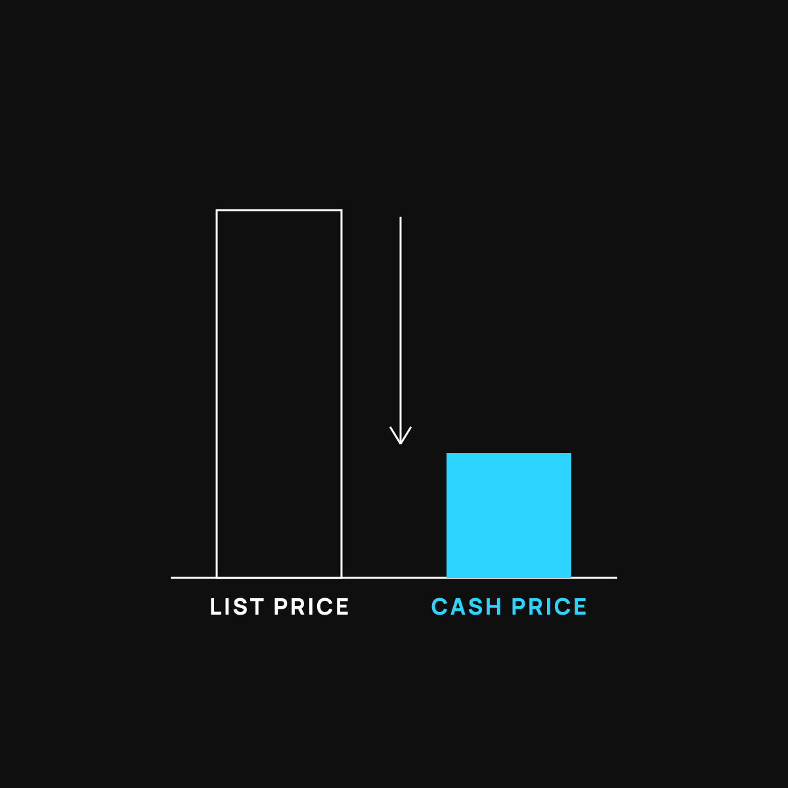

The Cash Price Secret Hospitals Don't Advertise
For a lot of everyday care, there are two prices. Here are the exact words that get you the cheaper one.
A lot of medical care has two prices: a high sticker price built for insurance haggling, and a lower cash price for people who pay directly. Ask "What's the cash price if I don't use insurance?" before your visit, compare it to what you'd owe with insurance, and pay the smaller one. Cash paid usually doesn't count toward your deductible.

Here's a secret that can save you real money at the doctor: for a lot of care, there are two prices, and the cheaper one is often the price you pay when you don't run it through insurance. It's called the cash price, and most people never think to ask for it.
That sounds backward. Insurance is supposed to make things cheaper, not more expensive. So let's clear it up fast.
The sticker price nobody actually pays
Think about buying a car. There's the sticker price on the window, the big number that looks official. And then there's the price people actually pay after a little back and forth, which is often thousands lower. The sticker is mostly for show.
A lot of medical pricing works the same way. There's a high "list price," a number built for insurance companies to negotiate against, and then there's the real, no-drama cash price for someone paying on the spot. When you run a simple visit or a lab through insurance, you can get charged against that inflated list price. When you just ask to pay cash, you sometimes skip the whole circus.
Why two prices even exist
You don't need a healthcare degree for this. Two quick reasons.
First, billing insurance is expensive and slow for the provider. Paperwork, coding, waiting weeks to get paid, sometimes fighting to get paid at all. A patient who pays cash today saves them all of that, so many will happily charge less.
Second, that big list price was never really meant for you. It's an opening number in a negotiation between the hospital and the insurer. If you walk in as a cash payer, you can sometimes step out of that game entirely.
How to actually ask (the part that saves you money)
This is the whole point, so here are the exact words to use. No confrontation needed. You're just asking a normal question.
- Before a visit, test, or procedure, ask: "What's the cash price if I don't use insurance?"
- If they seem unsure, try: "Is there a self-pay or prompt-pay discount?" Those are the magic words at a lot of front desks.
- For anything planned, like a scan or a lab, call and ask first. Prices swing wildly between places, and five minutes on the phone can save you a few hundred dollars.
- Always ask before, not after. Once it's billed through insurance, the cash price is usually off the table.
That's it. You're not being difficult. Front desks hear these questions every day.
The honest fine print
I'm not going to tell you cash always wins, because it doesn't. A couple of real catches.
If you've already blown past your deductible for the year, insurance may now be the cheaper route, so it's worth comparing both. And money you pay in cash usually does not count toward your deductible. So if you're likely to hit a big bill later in the year anyway, running things through insurance might make more sense. The move is simple: ask for both numbers, then pick the smaller one for your situation.
This is the same muscle
If you read Nobody Gets Paid to Make You Well, you already know the system's incentives aren't pointed at your wallet. Asking for the cash price is one small, concrete way to push back. It's also exactly how health sharing groups keep costs down: they negotiate the cash price first before anyone chips in.
You don't need to change your whole life. You just need to ask one more question than you used to.
The takeaway
For a lot of everyday care, the cash price is the quiet discount hiding in plain sight. Ask "what's the cash price?" before you hand over your insurance card, compare it to your normal cost, and pocket the difference. The cheapest bill is the one you thought to ask about.
Questions I get about this
How do I ask for the cash price at the doctor?
Before the visit, test, or procedure, ask: "What's the cash price if I don't use insurance?" If the front desk seems unsure, try "Is there a self-pay or prompt-pay discount?" Ask before, not after. Once it's billed through insurance, the cash price is usually off the table.
Why is the cash price cheaper than using insurance?
Two reasons. Billing insurance is slow and expensive for the provider, so a patient who pays today saves them paperwork and waiting. And the big list price was never meant for you. It's an opening number in a negotiation between the hospital and the insurer.
Does paying cash count toward my deductible?
Usually not. So if you expect to hit a big bill later in the year anyway, running care through insurance might make more sense. The move is simple: ask for both numbers, then pick the smaller one for your situation.
Can I pay cash even if I have insurance?
Yes. You can choose not to use your insurance for a visit and pay the self-pay price instead. Many people do this for labs, imaging, and routine visits while they're still under their deductible. Just ask for both prices first.
Nothing here is financial, medical, tax, or legal advice. I'm just a guy who did the homework, sharing what I learned. You make your own calls.
New here?
Normaltown USA is plain-English money and healthcare help for normal people, written by a regular guy with a family of four. No jargon, no hype. Start here, or read the FAQ.